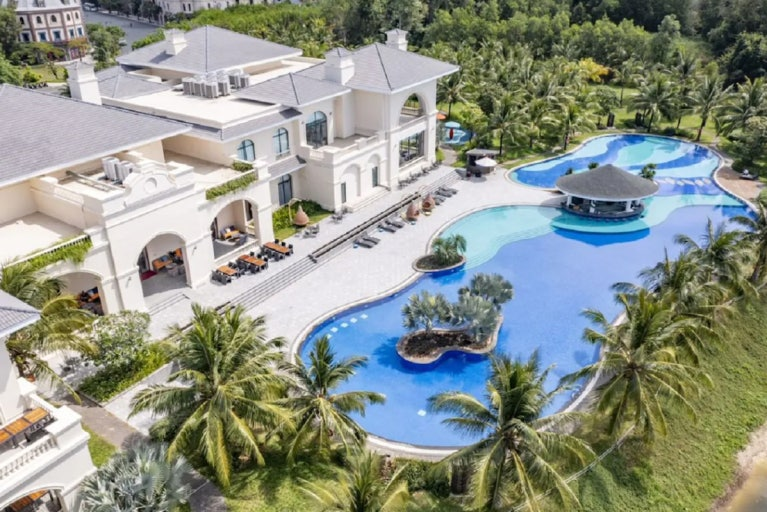
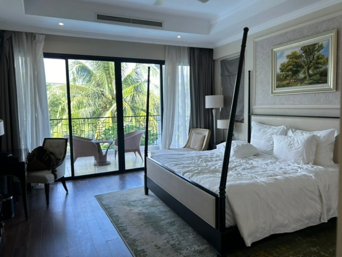
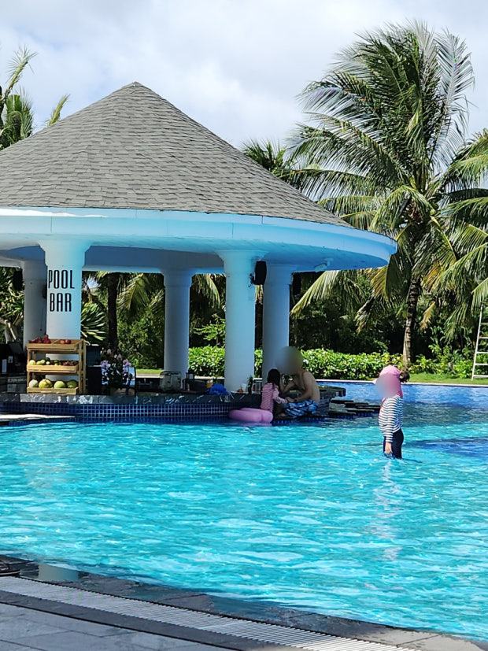
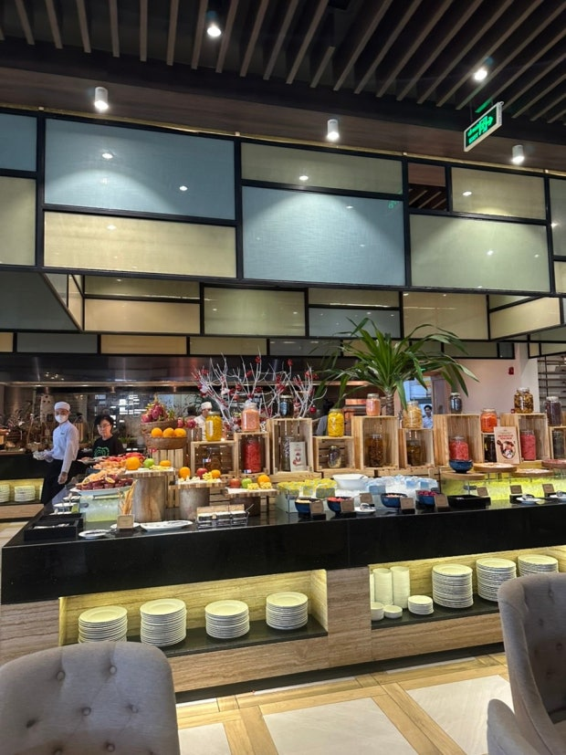
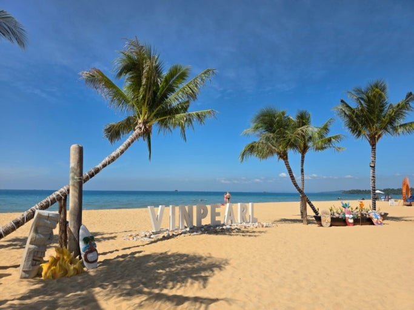
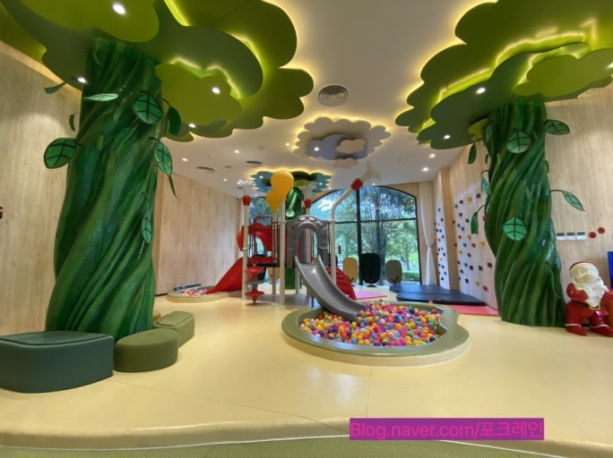

- 저희 처럼 여러 가족들 가기에 좋은 북부에 위치한 빈펄 원더월드입니다
- 빈펄 계열 리조트들이 북부에 모여 있는데, 그 중 원더월드는 풀빌라 위주로 구성되어 있어요
- 빈원더스, 사파리, 그랜드월드의 접근성이 좋습니다
- 로비의 메인 수영장이 다소 아쉽다는 평이 있지만, 그걸 제외하고는 푸꾸옥 가족여행에 최고인 듯 합니다

- 4베드룸의 최대 인원은 16명입니다
- 지금 인원인 13명입니다.
- 건우네 성인 2 아동 1, 서현이네 성인 2 아동 3, 승현이네 성인 2 아동 3, (((주완이네 성인 2(은정언니, 나현이) 아동 1)))
- 혹시 주완이네 같이 여행가게된다면, 4베드룸 그대로 인원수만 변경해서 다시 예약을 잡으면 될 것 같습니다
- 엑스트라 배드는 추가가 안되고, 침구류만 추가된다고 블로그에서 봤어요
- 모든 방에는 화장실과 샤워시설이 개별로 있고, 거실에 공용 화장실이 또 있습니다
- 1층에 거실, 주방, 화장실, 메인룸
- 2층에 룸 3개 있습니다
- 2층에 싱글배드 2개인 방 제외하곤 전부 큰침대 1개씩 있어요

- 메인 수영장 06:00~19:00
- 다른 건 몰라도 풀바가 운영되고 있어서, 수영하면서 음주도 가능해서 휴양에 최고인 듯 합니다 ㅎㅎㅎ

- 06:00~10:30
- 일정에 조식은 다 포함이 되어 있어서, 왠만해선 조식은 다 챙겨 먹으면 좋을 것 같아요

- 빈펄 리조트 해변도 한번 가면 좋겠어요
- 해변도 버기를 타고 이동해야하는 것 같아요
- 해양 액티비티(제트스키, 패들 보드, 카약, 스노클링, 바나나보트, 파라세일링)를 신청하고 할 수 있습니다
- 선베드, 파라솔, 타월 무료 이용 가능합니다

- 로비에 키즈 라운지가 있어요
- 최서진과, 진서윤은 키즈 라운지에서 놀고 싶어할 것 같은데,
- 좀 더 큰 애들은 애매한 시설 같아요 ㅎㅎ
- 무료 키즈 클래스와 유료 키즈 클래스가 있어서 혹시 필요하시다면 신청하면 될 것 같습니다